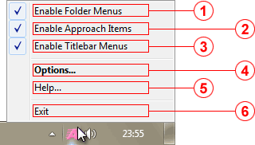

The Tray Menu provides quick access to the program's most important controls. It appears when you right-click the KO Approach icon in the Tray.

Enable Folder Menus checkable item
Turns on/off the Folder Menus feature.
Enable Approach Items checkable item
Turns on/off the Approach Items feature.
Enable Titlebar Menus checkable item
Turns on/off the Titlebar Menus feature.
Options... item
Opens the program's Options window. This is the default item and can also be selected by double-clicking the Tray Icon.
Help... item
Launches this Help file.
Exit item
Quits KO Approach and ends the Approach.exe process.